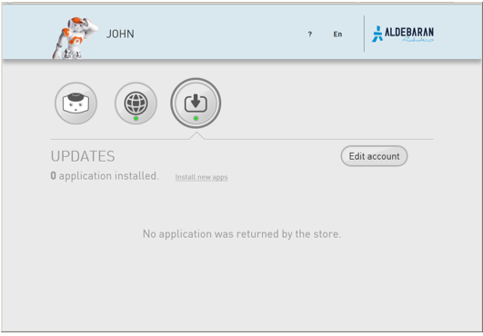

Registering and updating your NAO¶
Updates¶
Updates section allows you to set and manage the link to the Aldebaran Cloud.
For further details, see:
Registering your NAO¶
| Step | Action |
|---|---|
On a computer connected to Internet, display the NAO Web page. For further details, see: Accessing the NAO Web page. |
|
| Click the Updates page. | |
Click the Edit account button. 
|
|
| Type the Email and Password of your Aldebaran Cloud account. | |
| Click the Connect Button. |
Updating your NAO¶
| Step | Action |
|---|---|
Make sure your NAO is turned on and connected to the network. Not sure?
|
|
On a computer connected to Internet, display the NAO Web page. For further details, see: Accessing the NAO Web page. |
|
| Click the Updates page. | |
Applications needing to be updated appear. 
|
|
Make sure Autonomous Life is switched off. For further details see: Switching Autonomous life on and off. |
|
| Click the Update All button. |
When do I need to update my NAO¶
You can trigger the update using the NAO Web page, when:
you want to retrieve the last release of already installed applications.
you have selected new applications on the Apps 2.0 Store.
For further details, see: Selecting applications to install.
Downloading a system image¶
When a new system image is available for download, the NAO Web page displays an alert:

This automatic download is the result of a a setting defined on the Apps 2.0 Store. For further details, see: Setting automatic system update.
To download the system image:
| Step | Action |
|---|---|
Click the Download button. A progression bar appears. 
Then: 
|
|
Check the battery level. Important: make sure the robot battery is fully charged: a power shortage during upgrading could leave the robot in a fatal state. Tips: if your battery has a limited autonomy, you should leave the charger plugged during the upgrade. However it could be wise to order a new battery. |
|
Click the Reboot now button. The boot process can take a long time. For further details, see: Upgrading. |